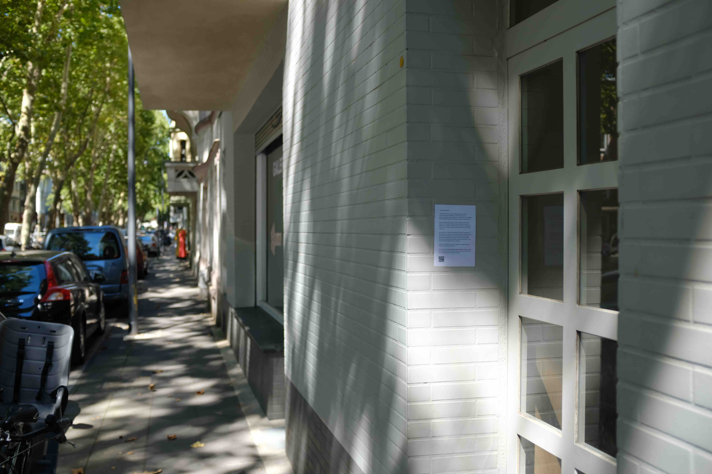
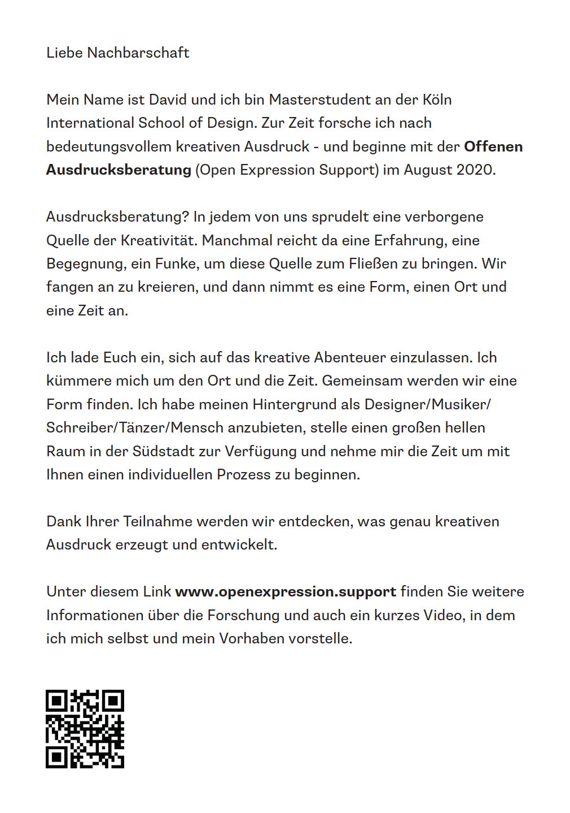
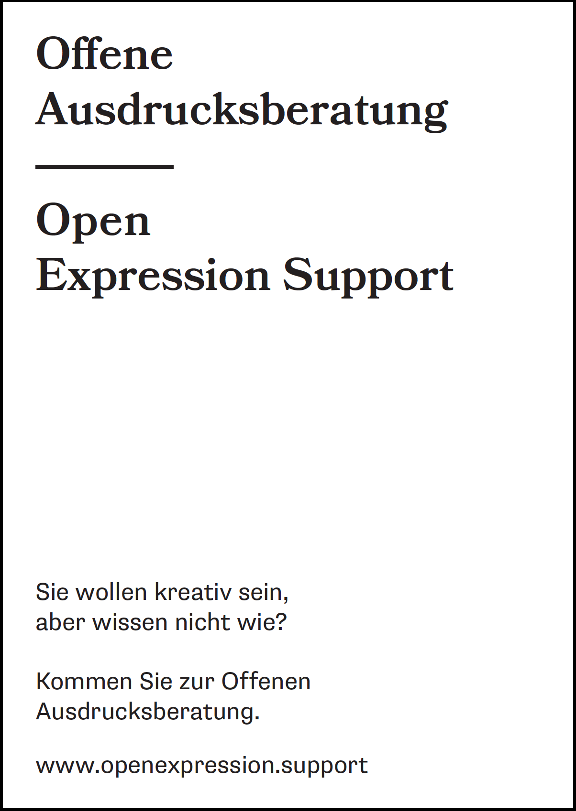
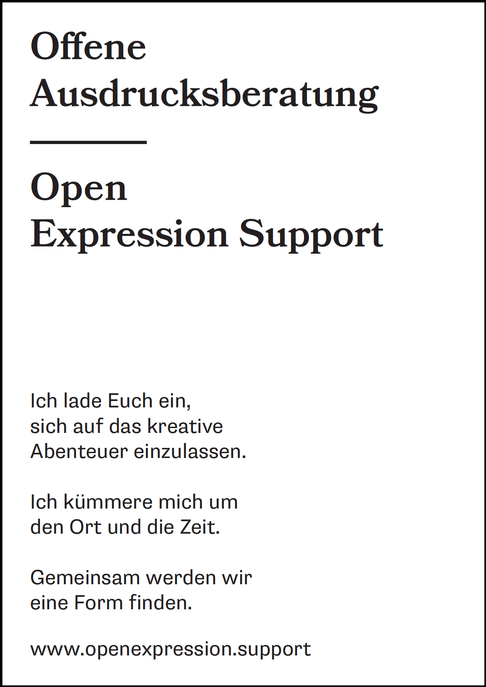
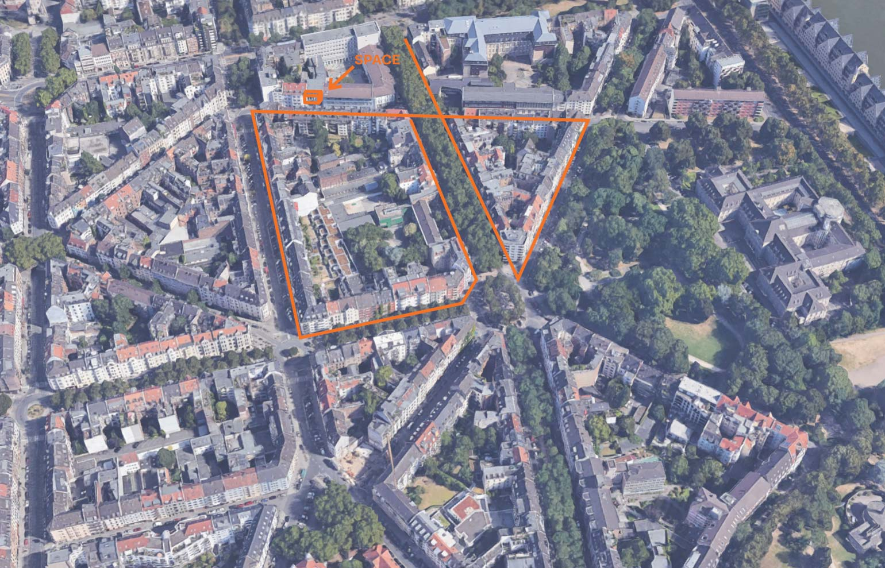
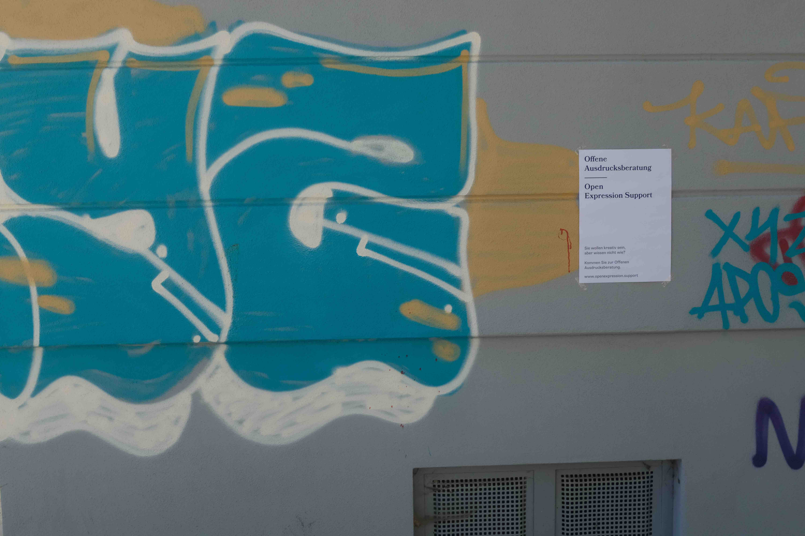

The aim of OES (or Offene Ausdrucksberatung) is to provide space and time for those who would usually not come into contact with creative or artistic institutions, to jointly engage in an experience of expression and to reach a creative mode.
Well, in order for the experimental project to take off, participants are needed. The idea is to have 6-15 people in the first round, aiming for 1.5h individual, weekly sessions with each person.
To do what exactly? - That is to be defined together. Although it is my task, besides organising space and time, to guide participants through this process by bringing structure, providing creative exercises, capturing their progress and eventually being a soundboard. The exact role I should play will vary depending on the needs of each person joining OES.
Since the outcome of the experiments heavily depend on who is participating, and the potential of an Open Expression Support lies within the openness, it’s important to reach a diverse audience.
Where to start? Who to invite? - As the space for the first experiment cycle is located at KISD (Köln International School of Design) in the Südstadt in Köln, I thought of reaching out to the people living in that area. This because it seemingly makes sense to open up OES for those who are living close by and hoping they might already know and trust KISD as a place.
How do I present myself? What do I offer them? What information and what tone of voice is appropriate? Which communication channel?
As a first attempt, I chose to take on the tone of „a message to the neighbours“ in which I would stick a written note on the house doors in the Südstadt, to serve as an introduction and invitation to Open Expression Support. Here I introduce myself, explain what this research is about, and eventually refer to a website under www.openexpression.support. (EDIT: the main page is now used to link to the process blog, the invitation-page can still be seen under www.openexpression.support/invitation)

To take off the anonymous and creepy edge, I thought of presenting myself and my plans in a video in which I show the space and try to give people a feel for what it might be like. The static site includes some written content about OES, my contact details and an FAQ.
The goal is to lead people to www.openexpression.support through the invitation on the doors, to convince them of contacting me and joining OES. I also made two posters that I could hang in the streets, referring to the website.
 
Okay, those posters could be better thought through as the first one might sound like a cheap ad and the last one is definitely a little floaty. Could they go together?
On Wednesday 05/08, I hung invites on about 35 doors (including 4 posters) covering 5 streets surrounding the space in the Südstadt. (see image)
 
And as I could have guessed, it didn’t work. As in, nobody contacted me. The website traffic totalled 25 unique sessions in the past days, and the final videoviews count 9. Not a very effective campaign it was.
If everyone would have been home to read the message, with an average of 8 possible participants per home, I could have reached about 210 people. But then, it’s holidays, corona, and probably no-one really cares.. This means, if I want to find 6-15 (diverse) participants by the end of August, I need to change my strategy and make people care!
What’s next:
- Get feedback on tone of voice, german language, display, content
- Find out which institutions, clubs, Vereine, businesses, … there are in the Südstadt who might be willing to spread (or display) information
- Increase the scope and share the message outside the Südstadt in clubs, cultural centers, …
- Spread message through personal network
- Physically address people on the street
- More popping advertisement style? Using direct and triggering language?
- Run ad in a local newspaper? Or if I'm desperate, even online ads?
If I say I would like to reach different kinds of people, then I'll need tailored strategies to enter a variety of communities. Ideally I can find participants of different ages, education and creative skill level, stuborness/openness, ... Let's broaden the scope.